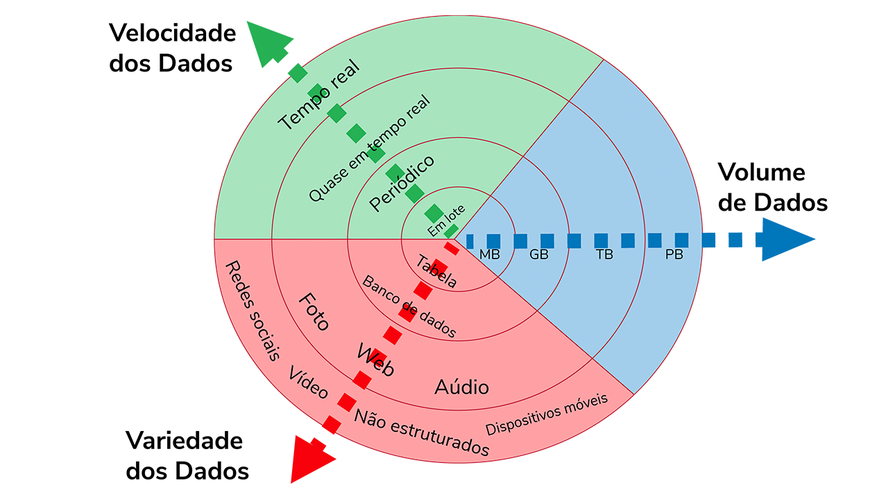

Módulo 1 | Aula 1
Grandes Bases de Dados
Introdução
Atualmente, grandes volumes de dados de diversas áreas são gerados diariamente em todo o mundo. De acordo com o relatório Data Age 2025 da IDC (International Data Corporation), em 2015 cada pessoa gerou em média aproximadamente 1,3 GB de dados por dia, e a previsão é de que esse número aumente para cerca de 5,3 GB diários até 2025. Esse fenômeno é impulsionado pelo avanço tecnológico, que possibilita o uso massivo de sistemas e dispositivos que coletam dados. Por exemplo, é comum que uma pessoa utilize uma rede social em um smartphone, onde cada postagem ou clique resulta em geração de dados.
A partir desses dados é possível extrair informações valiosas e gerar conhecimento. Com isso, as instituições demandam tecnologias para armazenar e gerenciar eficientemente grandes bases de dados. Desse modo, surgiu a área de Big Data, que se refere a esses grandes volumes de dados. Para descrever melhor o conceito de Big Data foram estabelecidos os 3 Vs: volume, velocidade e variedade.
Refere-se à imensa quantidade de dados gerados e processados, que pode vir do monitoramento de pacientes, do relacionamento com clientes, de interações em sites, do histórico de compras e muito mais. Esse volume de informações impacta principalmente dois aspectos: armazenamento e análise, ambos essenciais para extrair valor dos dados.
Refere-se à rapidez com que os dados são transportados e precisam ser processados. O transporte dos dados para a memória e a capacidade de avaliação em tempo real são aspectos fundamentais para garantir a eficácia de muitos produtos e serviços modernos, que dependem de dados instantâneos para funcionar corretamente.
Refere-se à diversidade dos tipos de dados disponíveis. Em vez de apenas um ou dois formatos de dados, há uma ampla gama, cada um com suas características e usos específicos. Os dados podem ser classificados em duas categorias: estruturados e não estruturados.
Observe o exemplo da figura a seguir: quanto mais próximo da borda do círculo, maior é o volume de dados, maior a velocidade, pois os dados são gerados em tempo real; e maior a variedade, uma vez que os dados são coletados de diversas fontes.

Além dos 3 Vs abordados inicialmente na literatura, posteriormente também surgiram mais 2 Vs, que se referem a: